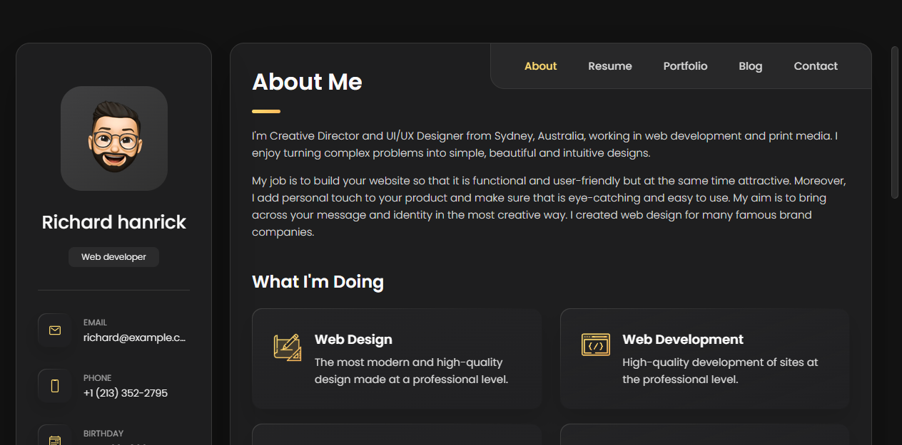
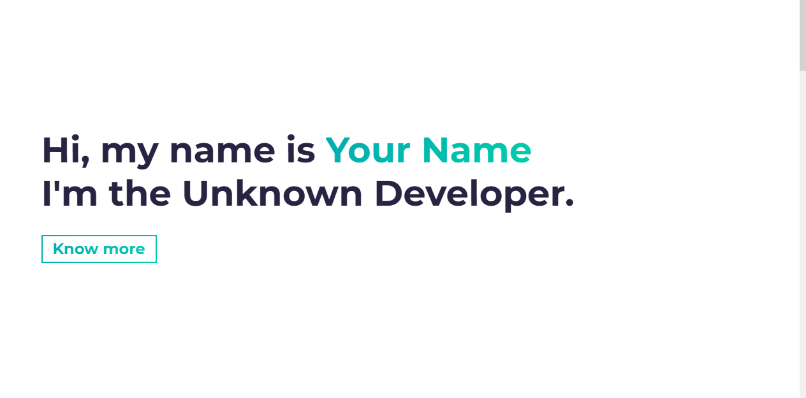
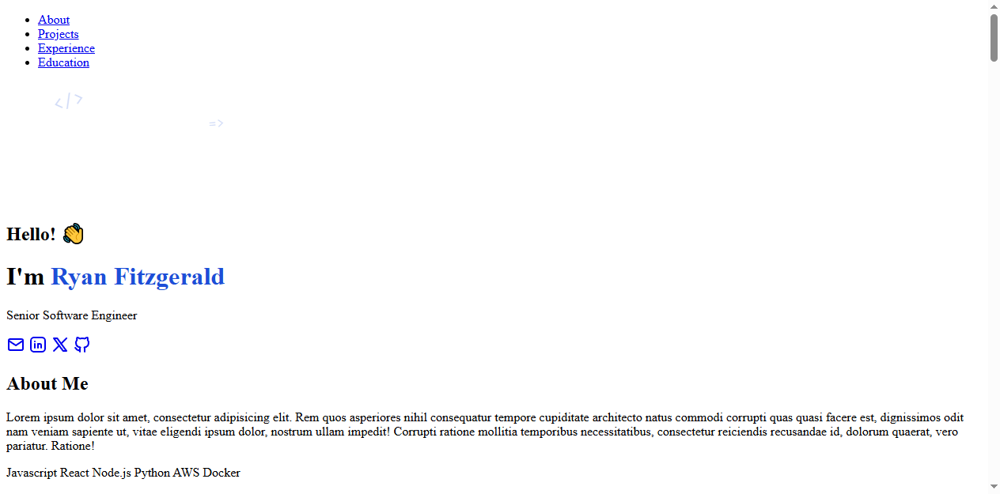
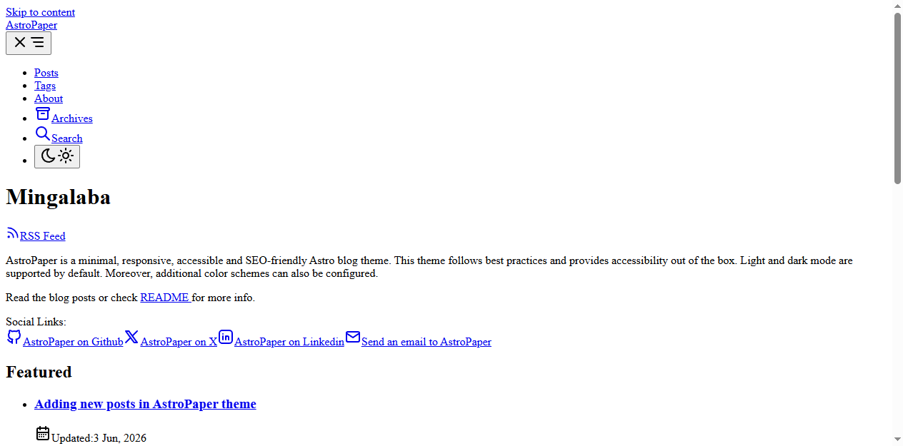

Открыть вживую ↗Подборка топовых бесплатных шаблонов портфолио из open-source: от минималистичного сайта-визитки до Astro-блога. Все можно посмотреть вживую, скачать и использовать бесплатно.
Каждый шаблон открывается вживую — посмотри, как он выглядит и работает на самом деле

Открыть вживую ↗
Открыть вживую ↗
Открыть вживую ↗
Открыть вживую ↗Блог-портфолио с постами, тегами, поиском и архивом. Доступность и SEO из коробки, светлая/тёмная темы. Один из лучших Astro-шаблонов.
Короткое сравнение, чтобы выбрать шаблон под свою задачу
| Шаблон | Сложность | Подходит для | Нужна сборка | Лицензия |
|---|---|---|---|---|
| vCard | Просто | Сайт-визитка, быстрый старт | — | MIT |
| Simplefolio | Средне | Классическое портфолио разработчика | Webpack | MIT |
| DevPortfolio | Средне | Резюме-сайт с проектами и опытом | Astro | MIT |
| AstroPaper | Сложнее | Блог + портфолио, регулярные посты | Astro | MIT |
Три шага от просмотра до своего сайта
Открой демо любого шаблона и посмотри, как он выглядит вживую. Все шаблоны бесплатны.
Нажми «GitHub» на карточке — попадёшь на оригинальный репозиторий. Клонируй или скачай ZIP.
Подставь своё имя, проекты и ссылки. Для vCard — прямо в HTML, для Astro — в одном конфиге.